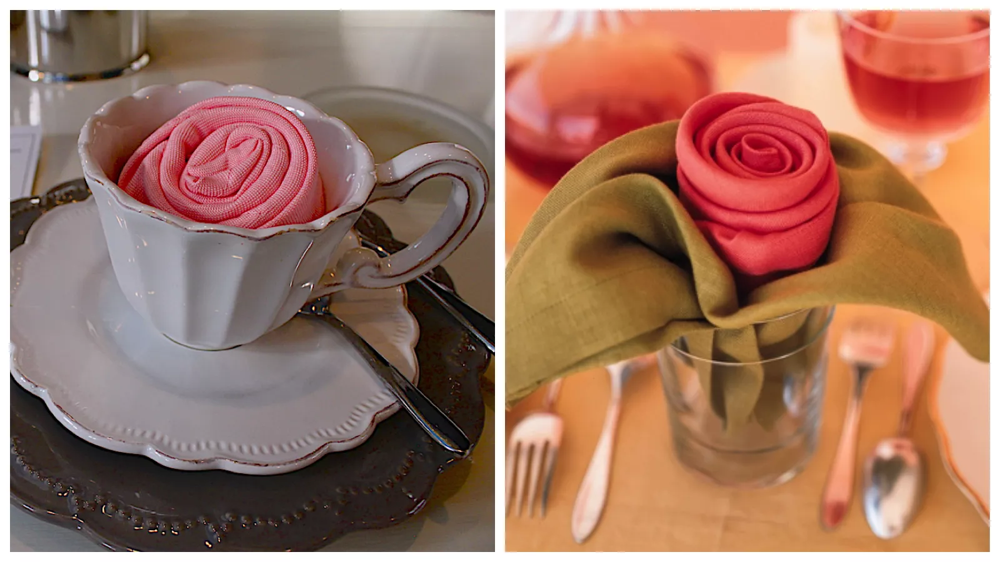

How to Make a Beautiful Origami Napkin Rose
These lovely origami napkin roses are perfect for high tea
or special occasions, yet deceptively simple to make yourself.
Rose napkins are perfect for weddings in particular; silk napkins
in red or white are a beautiful choice for the occasion.
Once you know how to make some origami napkin folds, you can
use this technique as an ice-breaker at dinners by showing
people how to fold them––or teach children who need a bit of
entertainment. This napkin fold is quite forgiving because,
just like in nature, no two roses are meant to be exactly alike.
A cloth napkin is best suited for this origami rose napkin fold, however,
some high-quality paper napkins may work just fine.
Although optional, ironing your napkins before folding them will
give your napkin roses a nice crisp, professional look.
Start with your napkin folded into a triangle. It doesn't have
to be perfectly even––it's better to fold the top layer a
little bit lower than the bottom layer of the triangle, as
it will eventually even out when you roll it.
Now, fold the triangle up from the bottom edge. You can decide on the height
of the rose at this point. Taller roses will require thinner folds here, while
shorter roses will have much wider folds.
Keep folding up until the unfolded napkin portion is about
twice the height of your roll left at the top.
Flip the napkin over from top to bottom.
Now start rolling from either the left or right side.
Keep in mind the top edge of your rose is formed with the top edge of the napkin here.
Keep rolling carefully until you reach the other end.
Next, take the loose end and tuck it underneath the outer layer.
You can use a butter knife to poke it underneath if you need to.
Now concentrate on the underside of the rose. There are two layers of napkin here.
Pull the two layers apart. Be careful not to pull the whole rose apart.
Pull the outer layer and reverse it around the rose, a bit
like when you reverse an inside-out sock.
The leftover "leaf" can be twisted and then pulled
up around the rose in the same way as the other one.
Alternatively, you can pull the second "leaf" in the same
direction as the first without twisting, giving it a
double-leaf on one side of the rose. This may be a better
option for floppier or thinner types of fabric.
As with all origami, practice makes perfect. The first couple
of times you make your origami napkin rose, it may not look
that good. Simply unfold it and give it another go. Experiment
with the tightness of the folding; sometimes a looser wrap works better.

There are a few different ways you can present your rose napkins.
For a full course meal, they can be placed directly on top
of the plate or to the side. Another nice way to present napkins
is inside wine glasses or teacups. You can also fold napkins into cutlery pockets.

Our Purpose Is To Sustainably Make the Pleasure and Benefits of sports Accessible to the Many.
Copyright-2021 Abdul Haq